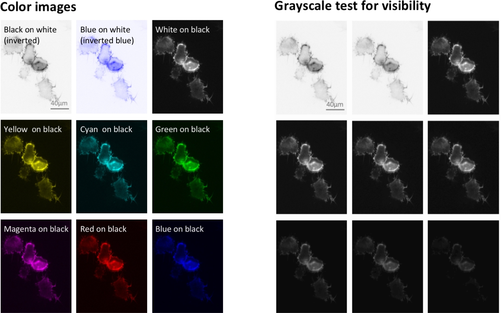
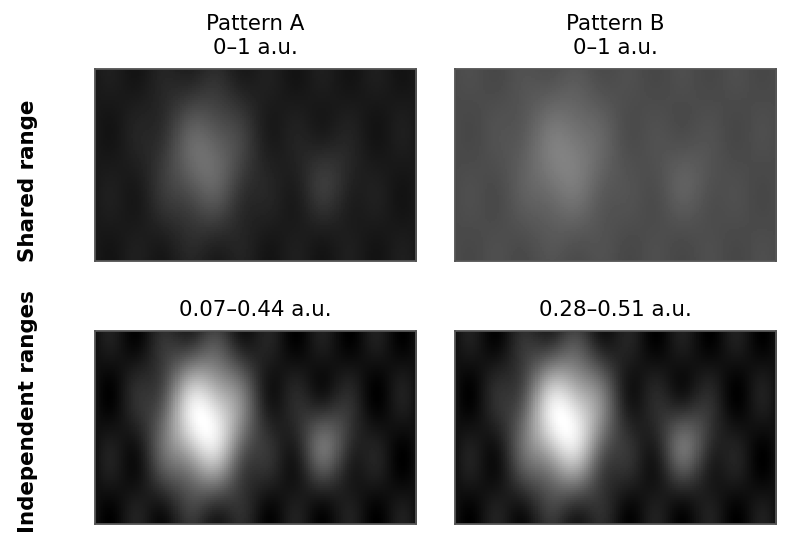
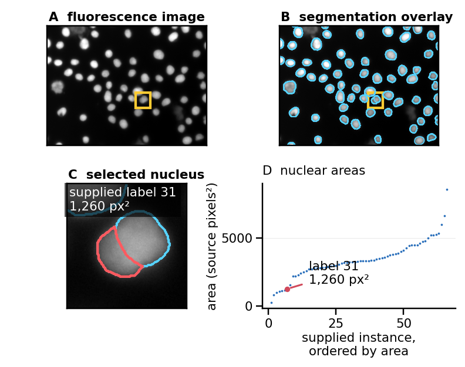

Biological images
Show images in which readers can inspect the feature you discuss, alongside its measurements when available. Prepare the figure from copies and preserve the images used for analysis.
Select and frame images
Choose fields from the images used in the analysis that reflect the reported result. When a phenotype varies substantially, show several examples spanning that variation rather than one especially striking cell. Place them beside the corresponding quantitative results. [2], image formatting.
A tissue overview shows how structures are arranged; a closer view can reveal cell shape or where a marker lies within a cell. If readers need both, pair the overview with an enlarged region. Check that the feature remains visible at the figure’s final size before deciding how many images fit in a panel. [1], Figure 3.
Crop without losing context
Crop empty margins or irrelevant regions, but retain neighboring structures that affect the interpretation. Mark the exact enlarged region on the overview and place the detail beside it. An inset within the overview saves space only when it does not cover relevant data. Use a visible gap between separate images so their edges cannot be mistaken for a continuous field. [1], Figure 3; [2], Figure 4a–c.
Keep the image’s proportions when resizing. If rotating images makes anatomical comparisons easier, use a consistent orientation and label it. Rotation by an arbitrary angle resamples pixels in many image editors; make measurements on the analysis images before preparing rotated copies for the figure. [2], image formatting.
Calibrate each view
Add a scale bar with its length and unit. Use the image’s spatial calibration; an objective label such as “40×” does not specify the size of a feature in a resized figure. Put the bar where it contrasts with the background without covering the feature of interest. When no suitable area exists, place it just outside the image. [1], Figure 4; [2], image annotation.
An enlarged crop needs its own scale indication. Keep a scale bar attached to its image when resizing, or regenerate it from the final calibration. [1]; [2].
Show channels
For a single fluorescence channel, start with grayscale. Dark blue or red against black can hide fine structures that are readily visible in grayscale. An inverted grayscale display can help with thin structures on a light page; keep the choice consistent across comparable panels. [3]; [1], Figures 5–6.
The same structures under different color mappings

Figure 6 reproduced unchanged from Jambor and colleagues (2021), © the authors, CC BY 4.0. Compare the fine extensions around the cells, rather than only their bright centers.
Combine an overlay with separate channels
Use a merged image to show where labeled structures lie relative to one another. Include separate grayscale channels when overlap or unequal brightness makes either component difficult to inspect. Keep the field, crop and orientation identical across the component images and merge. Label channels with their markers or targets, and use those labels consistently throughout the figure. [4]; [1], Figures 7–8.
Choose display colors for visibility rather than to match fluorophore names. Cyan and magenta are useful starting choices for two channels; assess the actual merge under color-vision simulations. A palette that separates bright objects may still hide a weak channel. Separate grayscale panels let readers inspect that channel without relying on the composite color. [4]; [1].
Keep colors assigned to the same targets across conditions. Do not compare the abundance of two targets from their apparent brightness in different colors: color mapping, staining and acquisition affect that appearance. If you make a claim about how much two markers overlap, show how overlap was measured. The color of a merge alone does not establish its extent. [4]; [2], image colors and channels.
Intensity ranges and processing
Choose the displayed minimum and maximum while inspecting both the image and its intensity histogram. A range that is too wide can make real structures nearly invisible. A range that is too narrow clips dim pixels to black or bright pixels to white, concealing differences within those regions. Start with a linear mapping and retain the features needed for the comparison. [2], Figure 4d.
For images intended to compare signal intensity, use the same display range and processing for the corresponding channel across conditions. Automatic contrast applied separately to each image can make a weak signal look as bright as a strong one. Check how the images were acquired and analyzed too: identical display settings cannot correct differences introduced during acquisition or analysis. [2], image colors and channels.
Shared and independent intensity ranges

Independent stretching makes both patterns look alike despite their different intensity ranges. It helps inspect their structure but removes the brightness comparison.
When the purpose is to compare structure and the images differ greatly in brightness, separately adjusted views may reveal details that a common range hides. Identify those adjustments in the caption, and use the quantitative measurements to compare intensity. Keep each view’s range visible when the numerical intensity scale is important. [2], Figure 2 and image colors and channels.
Make transformations visible
Gamma adjustment and other nonlinear mappings change the relative display of weak and strong intensities. If one is needed to reveal structure, identify it and provide a linearly mapped comparison. Include a labeled intensity scale for pseudocolor or nonlinear displays. [2], Figures 2 and 4g.
Filtering, deconvolution and learned image restoration can also change the appearance of structures. Identify these operations in the caption and describe their settings in Methods. Preserve the input images so readers can inspect them before restoration. State which processing was used for measurements and which adjustments were made only for display. [2], image colors and channels; image-analysis workflows.
Connect images to measurements
When a result comes from image analysis, show an example input image. If segmentation determines which objects or regions were measured, add outlines or masks showing those boundaries. Keep an unobstructed image alongside a dense overlay. Include difficult cases when errors, such as merging neighboring objects, could change the counts or measurements. [2], image formatting and image-analysis workflows; [1], Figure 11.
Example: inspect the segmentation before counting

The crop shows two touching nuclei assigned separate labels in the supplied expert annotation. The red outline identifies the nucleus represented by the red point in the area plot (1,260 source pixels²). The 66 areas are calculated from the original mask; this example uses the supplied annotation without an independent accuracy assessment.
Adapted from the CC0 S-BIAD634 BioImage Archive dataset, An annotated fluorescence image dataset for training nuclear segmentation methods, by Taschner-Mandl and colleagues (2023); raw image and supplied expert annotation normal_39. S-BIAD634 is released under CC0 1.0.
In the accompanying quantitative plot, preserve the grouping of cells or fields within samples. Many cells from one culture do not show how the finding varies between cultures. The chapter on observations and uncertainty explains how to display this grouping and choose summaries. [5].
Labels and annotations
Use a few arrows, outlines or direct labels to identify the structures relevant to the comparison. Place labels beside small features rather than on top of them. Distinguish annotation types by shape or line style when they have different meanings; color alone can be difficult to distinguish against a multicolored image. If numerous labels obscure the image, provide a separate annotated copy. [1], Figures 10–13 and Table 1.
For a time series, put elapsed time on each frame and keep the framing and scale consistent. Label the anatomical orientation of a section and identify any projection, so readers know which view of the specimen they are seeing. [2], image annotation and Figure 5.
In the caption, identify the specimen and tissue, markers or stains, channel colors, scale and annotations. Explain any inset or projection. State whether images have separate intensity adjustments and identify processing that changes their appearance, as described above. Put acquisition and analysis details in Methods, including the software, version, parameters and manual selections needed to reproduce the workflow. [1], section 7; [2], image-analysis workflows.
Verify the image figure
Keep the original images and metadata, the analysis inputs and outputs, and the assembled figure as separate files. Record which source image produced each panel and which crop, channel mapping and adjustments were applied. Share the images used in figures and quantification through an appropriate repository where possible, together with the workflow and example inputs and outputs. [2], image availability and image-analysis workflows.
Inspect the exported figure at publication size. Check that the crop markers still point to the correct regions, scale bars remain attached to their images, weak structures are visible and annotations do not cover the evidence. [1], sections 1–6.
Final image check
- The selected fields show the reported phenotype and its variation.
- Crops retain necessary context; enlarged regions and physical scales are clear.
- Each channel is identifiable, and the merge does not hide essential structures.
- Images used for intensity comparisons share display ranges; separate or nonlinear adjustments are disclosed.
- Readers can see the input image and the objects or regions used for image-derived measurements.
- The exported panels can be traced to preserved images and processing records.